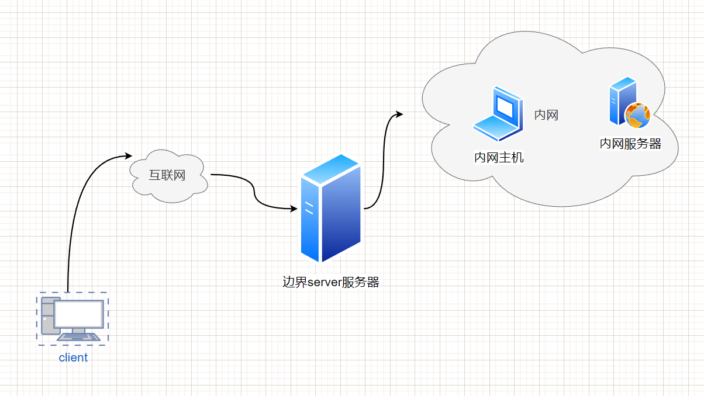

内网穿透是一种技术，它允许通过公共网络（例如互联网）访问位于私有网络（例如家庭网络或公司网络）中的设备或服务。在传统的网络环境中，私有网络中的设备通常无法直接从公共网络中访问，因为它们位于私有IP地址范围内，并且受到网络地址转换（NAT）和防火墙的限制。内网穿透技术通过各种手段克服这些限制，使得公共网络中的设备可以直接访问私有网络中的设备。
一个通俗的例子是家庭网络中的摄像头访问。假设您在家中安装了一个摄像头，并希望能够通过互联网远程访问它，例如从手机或电脑上查看实时视频。然而，摄像头连接到的是家庭网络中的私有IP地址，而互联网无法直接访问该私有IP地址。这时，您可以使用内网穿透技术，将摄像头的数据流通过公共网络传输到您的手机或电脑上。通过配置适当的内网穿透工具和设置，您可以在不同网络环境中，通过公共网络连接到私有网络中的摄像头，实现远程访问和监控。

接下来我会由GO语言开发一个NAT内网穿透插件
整体的程序主要分为三个部分，通用部分、客户端部分,服务器部分
下面我会从通用部分开始介绍器整个程序的实现。
我们知道，TCP传输数据的特定是字节流的，因此，当我们发送一些信息时，有可能这些包会被黏在一起，客户端收到了不该出现的信息，这是我们万万不希望出现的，因此我们在这块定义相关的发包和收包的协议以避免发生这些问题。
1// IMessage 将请求的消息封装到一个Message中，定义抽象的接口2type IMessage interface {3 // GetMsgID 获取消息的ID4 GetMsgID() uint325 // GetMsgDataLen 获取消息长度6 GetMsgDataLen() uint327 // GetMsgData 获取消息内容8 GetMsgData() []byte9 // SetMsgID 设置消息的ID10 SetMsgID(uint32)11 // SetMsgLen 设置消息长度12 SetMsgLen(uint32)13 // SetMsgData 设置消息内容14 SetMsgData([]byte)15}
该接口IMessage定义了封装请求消息到Message的方法，并提供了一些抽象的操作消息的方法。以下是对该接口的描述：
GetMsgID()
uint32：获取消息的ID，返回一个uint32类型的消息ID。GetMsgDataLen() uint32：获取消息的长度，返回一个uint32类型的消息长度。
GetMsgData()
[]byte：获取消息的内容，返回一个[]byte类型的消息内容。SetMsgID(uint32)：设置消息的ID，接受一个uint32类型的参数，用于设置消息的ID。
SetMsgLen(uint32)：设置消息的长度，接受一个uint32类型的参数，用于设置消息的长度。
SetMsgData([]byte)：设置消息的内容，接受一个[]byte类型的参数，用于设置消息的内容。
x1// Message 该结构体为消息类型，其中包括消息的ID编号，2// 消息的长度 消息的内容3// 其中 ID 和 DataLen 为固定长度大小 为 4 + 4 = 8 字节4// Data 为消息的具体内容 其中DataLen为Data的大小5type Message struct {6 // ID 消息ID7 ID uint328 // DataLen 消息长度9 DataLen uint3210 // Data 消息的内容11 Data []byte12}13// NewMsgPackage 新建一个Message消息的包 传入的参数为消息的type-id 消息的实际内容14func NewMsgPackage(id uint32, data []byte) *Message {15 return &Message{16 ID: id,17 DataLen: uint32(len(data)),18 Data: data,19 }20}21
22// GetMsgID 获取消息的ID23func (m *Message) GetMsgID() uint32 {24 return m.ID25}26
27// GetMsgDataLen 获取消息长度28func (m *Message) GetMsgDataLen() uint32 {29 return m.DataLen30}31
32// GetMsgData 获取消息内容33func (m *Message) GetMsgData() []byte {34 return m.Data35}36
37// SetMsgID 设置消息的ID38func (m *Message) SetMsgID(id uint32) {39 m.ID = id40}41
42// SetMsgLen 设置消息长度43func (m *Message) SetMsgLen(len uint32) {44 m.DataLen = len45}46
47// SetMsgData 设置消息内容48func (m *Message) SetMsgData(data []byte) {49 m.Data = data50}
ID uint32：消息的ID编号，占据固定长度的4字节。DataLen uint32：消息的长度，占据固定长度的4字节。Data []byte：消息的具体内容，长度由DataLen指定。此外，代码还提供了一些方法来操作Message结构体：
NewMsgPackage(id uint32, data []byte)
*Message：创建一个新的Message消息对象，传入消息的ID和实际内容作为参数。
GetMsgID() uint32：获取消息的ID。GetMsgDataLen() uint32：获取消息的长度。GetMsgData() []byte：获取消息的内容。SetMsgID(id uint32)：设置消息的ID。SetMsgLen(len uint32)：设置消息的长度。SetMsgData(data []byte)：设置消息的内容。xxxxxxxxxx141// IDataPack 抽象层封装包解决TCP黏包问题的拆包封装包的模块2// 针对Message进行TLV格式的封装3// 针对Message进行TLV格式的拆包4// 先读取固定长度的head-->消息的长度和消息的类型5// 在根据消息内容的长度，在读取内容6// 直接面向TCP连接的数据流 TCP stream7type IDataPack interface {8 // GetHeadLen 获取包的头长度9 GetHeadLen() uint3210 // Pack 封包11 Pack(msg IMessage) ([]byte, error)12 // Unpack 拆包13 Unpack([]byte) (IMessage, error)14}
上述代码定义了一个名为IDataPack的接口，用于抽象层封装包解决TCP黏包问题的拆包封装包的模块。该接口提供以下方法：
GetHeadLen() uint32：获取包的头长度。用于确定消息头部的固定长度。Pack(msg IMessage) ([]byte,
error)：封包方法，将消息进行封装成字节流的形式，用于发送。Unpack([]byte) (IMessage,
error)：拆包方法，将接收到的字节流进行解析，还原成消息对象。接口的实现类针对Message消息进行了TLV格式的封装和拆包操作。TLV格式指的是消息头部包含类型（Type）、长度（Length），再加上实际的消息内容（Value）。
具体的封包过程如下：
具体的拆包过程如下：
通过实现IDataPack接口的具体类，可以对TCP连接中的数据流进行封包和拆包操作，解决TCP黏包问题，确保消息的完整传输。
xxxxxxxxxx451
2// DataPackage 封包解包的结构体3type DataPackage struct {4}5
6// NewDataPackage 创建一个封包拆包的实例7func NewDataPackage() *DataPackage {8 return &DataPackage{}9}10
11// GetHeadLen 获取包头的长度 根据我们的协议定义直接返回8就可以了12func (dp *DataPackage) GetHeadLen() uint32 {13 return uint32(8)14}15
16// Pack 将 ninterfance.IMessage 类型的结构封装为字节流的形式17// 字节流形式 [ 数据长度 + ID + 真实数据 ]18func (dp *DataPackage) Pack(msg ninterfance.IMessage) ([]byte, error) {19 // 创建一个字节流的缓存，将msg的信息一步一步的填充到里面去20 dataBuff := bytes.NewBuffer([]byte{})21 if err := binary.Write(dataBuff, binary.LittleEndian, msg.GetMsgDataLen()); err != nil {22 return nil, err23 }24 if err := binary.Write(dataBuff, binary.LittleEndian, msg.GetMsgID()); err != nil {25 return nil, err26 }27 if err := binary.Write(dataBuff, binary.LittleEndian, msg.GetMsgData()); err != nil {28 return nil, err29 }30 return dataBuff.Bytes(), nil31}32
33func (dp *DataPackage) Unpack(data []byte) (ninterfance.IMessage, error) {34 // 创建一个从data里面读取的ioReader35 dataBuffer := bytes.NewBuffer(data)36 msg := &Message{}37 if err := binary.Read(dataBuffer, binary.LittleEndian, &msg.DataLen); err != nil {38 return nil, err39 }40 if err := binary.Read(dataBuffer, binary.LittleEndian, &msg.ID); err != nil {41 return nil, err42 }43 return msg, nil44}45
这段代码实现了一个数据包的封包（Pack）和拆包（Unpack）的功能，用于将消息（Message）封装为字节流形式，并将字节流解析还原为消息对象。
DataPackage 结构体是封包和拆包的实现结构体，其中没有存储任何状态信息。
NewDataPackage() 函数用于创建一个 DataPackage 实例，返回指针。
GetHeadLen() 方法用于获取包头的长度，这里直接返回固定值 8，表示包头长度为 8 字节。
Pack(msg ninterfance.IMessage) ([]byte,
error) 方法将传入的 IMessage 对象封装为字节流形式。具体实现如下：
dataBuff。binary.Write 方法按照大端字节序将消息的数据长度、ID和真实数据依次写入 dataBuff。
dataBuff.Bytes()，即封装好的字节流。Unpack(data []byte) (ninterfance.IMessage,
error) 方法用于将字节流解析为消息对象。具体实现如下：
data 中读取的 dataBuffer。
Message 对象 msg。
binary.Read 方法按照大端字节序从 dataBuffer 读取数据长度和ID，并将其赋值给 msg 的对应字段。
msg 对象。xxxxxxxxxx221const (2 USER_AUTHENTICATION_SUCCESSFULLY = 100013)4const (5 NEW_CONNECTION = 200016 USER_INFORMATION = 200027 KEEP_ALIVE = 200038 CONNECTION_IF_FULL = 200049)10
11const (12 USER_NOT_EXIST = 3000113 USER_ALREADY_EXIST = 3000214 USER_EXPIRED = 3000315 Password_INCORRET = 3000416 AUTH_FAIL = 3000517)18
19const (20 USER_REQUEST_AUTH = 6000121)22
在第一个常量块中，USER_AUTHENTICATION_SUCCESSFULLY 的值为 10001，表示用户身份验证成功。
在第二个常量块中，定义了以下常量：
NEW_CONNECTION：值为 20001，表示新的连接。USER_INFORMATION：值为 20002，表示用户信息。KEEP_ALIVE：值为 20003，表示保持连接。CONNECTION_IF_FULL：值为 20004，表示连接已满。在第三个常量块中，定义了以下常量：
USER_NOT_EXIST：值为 30001，表示用户不存在。USER_ALREADY_EXIST：值为 30002，表示用户已存在。USER_EXPIRED：值为 30003，表示用户已过期。PASSWORD_INCORRET：值为 30004，表示密码不正确。AUTH_FAIL：值为 30005，表示认证失败。在第四个常量块中，定义了以下常量：
USER_REQUEST_AUTH：值为 60001，表示用户请求认证。在后续的过程中，将会更具系统的设计和相关业务不断进行更新操作。
xxxxxxxxxx171var ProtocolMap map[uint32]interface{}2
3func init() {4 ProtocolMap = make(map[uint32]interface{})5 // 添加创建协议6 ProtocolMap[NEW_CONNECTION] = "NEW_CONNECTION"7 ProtocolMap[USER_INFORMATION] = ClientConnInfo{}8 ProtocolMap[KEEP_ALIVE] = "ping"9 ProtocolMap[CONNECTION_IF_FULL] = "the-connection-is-full."10
11 ProtocolMap[USER_ALREADY_EXIST] = "user already exist!"12 ProtocolMap[USER_NOT_EXIST] = "user not exist."13 ProtocolMap[USER_EXPIRED] = "user not expired."14 ProtocolMap[PASSWORD_INCORRET] = "The password is incorrect."15
16 ProtocolMap[USER_AUTHENTICATION_SUCCESSFULLY] = "Authentication successful!"17}
这段代码定义了一个名为 ProtocolMap 的变量，它是一个映射（map）类型，用于存储消息协议的映射关系。
在 init() 函数中，首先使用 make() 函数创建了一个空的 ProtocolMap，然后通过键值对的方式将不同的消息协议与对应的值进行关联。
具体的映射关系如下：
NEW_CONNECTION 对应的值是字符串 "NEW_CONNECTION"，表示新连接的协议。
USER_INFORMATION 对应的值是 ClientConnInfo{}，表示用户信息的协议，ClientConnInfo 是一个结构体类型。
KEEP_ALIVE 对应的值是字符串 "ping"，表示保持连接的协议。
CONNECTION_IF_FULL 对应的值是字符串 "the-connection-is-full."，表示连接已满的协议。
USER_ALREADY_EXIST 对应的值是字符串 "user already
exist!"，表示用户已存在。USER_NOT_EXIST 对应的值是字符串 "user not exist."，表示用户不存在。
USER_EXPIRED 对应的值是字符串 "user not expired."，表示用户未过期。
PASSWORD_INCORRET 对应的值是字符串 "The password is incorrect."，表示密码不正确
USER_AUTHENTICATION_SUCCESSFULLY 对应的值是字符串 "Authentication
successful!"，表示通过这个 ProtocolMap，可以根据特定的协议值获取对应的消息或状态信息，方便在代码中处理不同的协议情况。
这一步是整个内网穿透的核心过程，不管以后整个程序写的如何，此处都是十分重要的。这一步呢，我们要封装一个交换数据的函数，即就是，将一个tcpConn的数据转发到另一个tcpConn里面去，在实现这些内容之前，我们先看看go提供的一个函数io.Copy:
xxxxxxxxxx31func Copy(dst Writer, src Reader) (written int64, err error) {2 return copyBuffer(dst, src, nil)3}参数说明：
dst 是目标 io.Writer 接口，用于接收拷贝的数据。src 是源 io.Reader 接口，用于提供要拷贝的数据。返回值：
written 是拷贝的字节数。err 是可能发生的错误。如果拷贝操作成功，该值为 nil。
io.Copy 函数会不断地从源 src 中读取数据，并将其写入目标 dst，直到源 src 的数据结束或发生错误。它会自动处理数据的缓冲和复制过程，简化了数据拷贝的操作。
看了这个函数我们是不是一下子就明白了，交换数据是如此的Easy!
TCPConn这个类型实现了Write(p []byte) (n int, err error)和Read(p
[]byte) (n int, err
error)方法，那么这个类型也就实现了Writer和Reader接口，因此可以直接调用这个函数。（go 语言特性，我非常喜欢）。
于是就有了我们封装好的函数：
xxxxxxxxxx171// SwapConnDataEachOther 通讯双方相互交换数据2func SwapConnDataEachOther(local, remote *net.TCPConn) {3 go swapConnData(local, remote)4 go swapConnData(remote, local)5}6
7// SwapConnData 这个函数是交换两个连接数据的函数8func swapConnData(local, remote *net.TCPConn) {9 // 关闭本地和远程连接通道10 defer local.Close()11 defer remote.Close()12 // 将remote的数据拷贝到local里面13 _, err := io.Copy(local, remote)14 if err != nil {15 return16 }17}xxxxxxxxxx251func CreateTCPListener(addr string) (*net.TCPListener, error) {2 tcpAddr, err := net.ResolveTCPAddr("tcp", addr)3 if err != nil {4 return nil, err5 }6 tcpListener, err := net.ListenTCP("tcp", tcpAddr)7 if err != nil {8 return nil, err9 }10 return tcpListener, nil11}12
13// CreateTCPConn 连接指定的TCP14func CreateTCPConn(addr string) (*net.TCPConn, error) {15 tcpAddr, err := net.ResolveTCPAddr("tcp", addr)16 if err != nil {17 return nil, err18 }19 tcpConn, err := net.DialTCP("tcp", nil, tcpAddr)20 if err != nil {21 return nil, err22 }23 return tcpConn, nil24}25
这两个函数比较简单，我就不在赘述了，CreateTCPListener是新建一个tcp的listener,CreateTCPConn是新建一个tcp的connecter，非常的简单。
此模块是客户端和服务器约定好如何传输用户的数据，如何将用户信息转化为字节流，以及如何从字节流中解封装为用户信息，也可以叫做协议吧。
xxxxxxxxxx411// ClientConnInfo 客户端连接信息2type ClientConnInfo struct {3 UID int644 Port int325}6
7// NewClientConnInstance 新建一个实体8func NewClientConnInstance(id int64, port int32) *ClientConnInfo {9 return &ClientConnInfo{10 UID: id,11 Port: port,12 }13}14
15// ToBytes 将 ClientConnInfo 结构体转换为字节流16func (info *ClientConnInfo) ToBytes() ([]byte, error) {17 buf := new(bytes.Buffer)18
19 // 使用 binary.Write 将字段逐个写入字节流20 if err := binary.Write(buf, binary.BigEndian, info.UID); err != nil {21 return nil, err22 }23 if err := binary.Write(buf, binary.BigEndian, info.Port); err != nil {24 return nil, err25 }26
27 return buf.Bytes(), nil28}29
30// FromBytes 从字节流中恢复 ClientConnInfo 结构体31func (info *ClientConnInfo) FromBytes(data []byte) error {32 buf := bytes.NewReader(data)33 // 使用 binary.Read 从字节流中读取字段值34 if err := binary.Read(buf, binary.BigEndian, &info.UID); err != nil {35 return err36 }37 if err := binary.Read(buf, binary.BigEndian, &info.Port); err != nil {38 return err39 }40 return nil41}单元测试：
xxxxxxxxxx201func TestClientConnInfo_FromBytes(t *testing.T) {2 ci := ClientConnInfo{3 UID: 1,4 Port: 8080,5 }6 data, err := ci.ToBytes()7 if err != nil {8 fmt.Println("[ToBytes Err]", err)9 } else {10 fmt.Println("[ToBytes Successfully]", data)11 }12 nci := new(ClientConnInfo)13 err = nci.FromBytes(data)14 if err != nil {15 fmt.Println("[FromBytes Err]", err)16 } else {17 fmt.Println("[FromBytes Successfully]", nci)18 }19}20
xxxxxxxxxx41=== RUN TestClientConnInfo_FromBytes2[ToBytes Successfully] [0 0 0 0 0 0 0 1 0 0 31 144]3[FromBytes Successfully] &{1 8080}4--- PASS: TestClientConnInfo_FromBytes (0.00s)这些内容比较类似，后续会考虑将这些封装为一个接口。
xxxxxxxxxx901// UserInfo 用户信息模块2type UserInfo struct {3 // UserName4 UserName string5 // Password6 Password string7 // ExpireTime8 ExpireTime time.Time9}10
11// NewUserInfoInstance 新建一个实体12func NewUserInfoInstance(username, password string) *UserInfo {13 return &UserInfo{14 UserName: username,15 Password: password,16 }17}18
19func (info *UserInfo) ToBytes() ([]byte, error) {20 buf := new(bytes.Buffer)21
22 // 将用户名长度编码到字节流中23 userNameLen := len(info.UserName)24 if err := binary.Write(buf, binary.BigEndian, int32(userNameLen)); err != nil {25 return nil, err26 }27
28 // 将用户名内容编码到字节流中29 if err := binary.Write(buf, binary.BigEndian, []byte(info.UserName)); err != nil {30 return nil, err31 }32
33 // 将密码长度编码到字节流中34 passwordLen := len(info.Password)35 if err := binary.Write(buf, binary.BigEndian, int32(passwordLen)); err != nil {36 return nil, err37 }38
39 // 将密码内容编码到字节流中40 if err := binary.Write(buf, binary.BigEndian, []byte(info.Password)); err != nil {41 return nil, err42 }43
44 // 将过期时间编码到字节流中45 if err := binary.Write(buf, binary.BigEndian, info.ExpireTime.Unix()); err != nil {46 return nil, err47 }48
49 return buf.Bytes(), nil50}51
52func (info *UserInfo) FromBytes(data []byte) error {53 buf := bytes.NewReader(data)54
55 // 从字节流中读取用户名长度56 var userNameLen int3257 if err := binary.Read(buf, binary.BigEndian, &userNameLen); err != nil {58 return err59 }60
61 // 从字节流中读取用户名内容，并根据长度进行截取62 userNameBytes := make([]byte, userNameLen)63 if err := binary.Read(buf, binary.BigEndian, userNameBytes); err != nil {64 return err65 }66 info.UserName = string(userNameBytes)67
68 // 从字节流中读取密码长度69 var passwordLen int3270 if err := binary.Read(buf, binary.BigEndian, &passwordLen); err != nil {71 return err72 }73
74 // 从字节流中读取密码内容，并根据长度进行截取75 passwordBytes := make([]byte, passwordLen)76 if err := binary.Read(buf, binary.BigEndian, passwordBytes); err != nil {77 return err78 }79 info.Password = string(passwordBytes)80
81 // 从字节流中读取过期时间82 var expireTimeUnix int6483 if err := binary.Read(buf, binary.BigEndian, &expireTimeUnix); err != nil {84 return err85 }86 info.ExpireTime = time.Unix(expireTimeUnix, 0)87
88 return nil89}90
这段代码定义了一个 UserInfo 结构体，表示用户信息模块。它包含了用户名、密码和过期时间等字段。
NewUserInfoInstance 函数是一个构造函数，用于创建 UserInfo 结构体的实例，并初始化用户名和密码。
ToBytes 方法将 UserInfo 结构体的字段编码为字节流。首先，创建一个 bytes.Buffer 缓冲区。然后，将用户名长度以 int32 类型的大端序编码写入缓冲区。接下来，将用户名内容以字节流形式写入缓冲区。然后，将密码长度和密码内容写入缓冲区。最后，将过期时间的 UNIX 时间戳以 int64 类型的大端序编码写入缓冲区。最终，返回缓冲区中的字节流。
FromBytes 方法将字节流解码为 UserInfo 结构体的字段。首先，创建一个 bytes.Reader 读取器，读取字节流。然后，从读取器中读取用户名长度，并根据长度创建字节切片。接着，从读取器中读取用户名内容，并将其转换为字符串赋值给 UserName 字段。然后，从读取器中读取密码长度，并根据长度创建字节切片。接着，从读取器中读取密码内容，并将其转换为字符串赋值给 Password 字段。最后，从读取器中读取过期时间的 UNIX 时间戳，并使用 time.Unix 函数将其转换为 time.Time 类型赋值给 ExpireTime 字段。
这样，通过 ToBytes 和 FromBytes 方法，可以实现 UserInfo 结构体与字节流之间的相互转换，方便在网络传输或存储中使用。
单元测试：
xxxxxxxxxx131func TestNewUserInfoInstance(t *testing.T) {2 ui := NewUserInfoInstance("wyfld", "yfw123456789")3 ui.ExpireTime = time.Now()4 d, err := ui.ToBytes()5 if err != nil {6 fmt.Println(err)7 return8 }9 fmt.Println(d)10 un := new(UserInfo)11 un.FromBytes(d)12 fmt.Println(un)13}xxxxxxxxxx51=== RUN TestNewUserInfoInstance2[0 0 0 5 119 121 102 108 100 0 0 0 12 121 102 119 49 50 51 52 53 54 55 56 57 0 0 0 0 100 132 113 19]3&{wyfld yfw123456789 2023-06-10 20:48:19 +0800 CST}4--- PASS: TestNewUserInfoInstance (0.02s)5PASSxxxxxxxxxx501// SendAndReceiveInstance 实体2type SendAndReceiveInstance struct {3 Conn *net.TCPConn4}5
6// NewSendAndReceiveInstance 新建一个控制层实例对象7func NewSendAndReceiveInstance(conn *net.TCPConn) *SendAndReceiveInstance {8 return &SendAndReceiveInstance{9 Conn: conn,10 }11}12
13// SendDataToClient 向客户端发送消息，此处应该指定协议14func (csi *SendAndReceiveInstance) SendDataToClient(dataType uint32, msg []byte) (int, error) {15 msgInstance := NewMsgPackage(dataType, msg)16 pkgInstance := NewDataPackage()17 dataStream, err := pkgInstance.Pack(msgInstance)18 if err != nil {19 return 0, err20 }21 count, err := csi.Conn.Write(dataStream)22 if err != nil {23 return 0, err24 }25 return count, nil26}27func (csi *SendAndReceiveInstance) ReadHeadDataFromClient() (ninterfance.IMessage, error) {28 // 根据我们协议规定的内容每次数据来的时候，先读取头部的8个字节的数据29 headData := make([]byte, 8)30 // 从Conn中读取数据到headData中去31 if _, err := io.ReadFull(csi.Conn, headData); err != nil {32 return nil, err33 }34 // 先创建一个解包的实例35 dp := NewDataPackage()36 // 解封装这个包37 return dp.Unpack(headData)38}39func (csi *SendAndReceiveInstance) ReadRealDataFromClient(msg ninterfance.IMessage) (ninterfance.IMessage, error) {40 if msg.GetMsgDataLen() < 0 {41 return msg, nil42 }43 // 新建一个data，长度为msg头部的长度44 data := make([]byte, msg.GetMsgDataLen())45 if _, err := io.ReadFull(csi.Conn, data); err != nil {46 return nil, err47 }48 msg.SetMsgData(data)49 return msg, nil50}
这段代码定义了一个名为 SendAndReceiveInstance 的结构体，表示发送和接收消息的实例对象。它包含了一个 Conn 字段，用于存储与客户端的 TCP 连接。
NewSendAndReceiveInstance 函数是一个构造函数，用于创建 SendAndReceiveInstance 结构体的实例，并初始化 Conn 字段。
SendDataToClient 方法用于向客户端发送消息。它接受一个 dataType 参数表示消息的类型，以及一个 msg 参数表示要发送的消息内容。首先，使用 NewMsgPackage 函数创建一个消息包实例，该实例包含了消息类型和消息内容。然后，使用 NewDataPackage 函数创建一个封包解包实例。接下来，将消息实例打包为字节流，并获取打包后的数据流。最后，使用 Conn 字段的 Write 方法将数据流写入连接，并返回写入的字节数和可能发生的错误。
ReadHeadDataFromClient 方法用于从客户端读取消息头数据。根据协议规定，每次数据到达时，首先需要读取8个字节的头部数据。该方法创建一个长度为8的字节切片 headData，然后使用 io.ReadFull 函数从 Conn 字段中读取数据并存储到 headData 中。接着，创建一个数据包解析实例 dp，并使用其 Unpack 方法解包 headData。最后，返回解包后的消息和可能发生的错误。
ReadRealDataFromClient 方法用于从客户端读取真实数据。根据协议规定，消息头部中记录了真实数据的长度，因此需要根据长度读取相应的数据。首先，检查消息的数据长度，如果长度小于0，则直接返回消息。否则，根据消息的数据长度创建一个字节切片 data，然后使用 io.ReadFull 函数从 Conn 字段中读取数据并存储到 data 中。最后，将读取到的数据设置为消息的数据部分，并返回消息和可能发生的错误。
这些方法组合起来，实现了从客户端发送消息和接收消息的功能，通过封包解包的过程，将消息转换为字节流进行传输，并在接收端进行解析和处理。
xxxxxxxxxx91Client2 Name"Client-NAT"3 PublicServerAddr"公网服务器域名"4 TunnelServerAddr"公网服务器隧道端口"5 ControllerAddr"公网服务器控制端口"6 LocalServerAddr"本地服务端口"7Auth8 Username"用户名"9 Password"密码"客户端配置信息包括：
Name：客户端的名称，此处为 "Client-NAT"。PublicServerAddr：公网服务器的域名，用于连接公网服务器。TunnelServerAddr：公网服务器的隧道端口，用于建立隧道连接。ControllerAddr：公网服务器的控制端口，用于控制和管理客户端。LocalServerAddr：本地服务的端口，客户端将在该端口提供本地服务。身份验证信息包括：
Username：用户的用户名，用于身份验证。Password：用户的密码，用于身份验证。通过这些配置和身份验证信息，客户端可以连接到公网服务器，并进行身份验证以获取访问权限。然后，客户端可以使用隧道连接、控制端口和本地服务端口进行网络通信和服务提供。
采用viper框架对配置文件的内容进行读取。
xxxxxxxxxx201type ParseConfigFromYML struct {2 ViperInstance *viper.Viper3}4
5func ParseFile(configFileName string) *ParseConfigFromYML {6 pcfy := new(ParseConfigFromYML)7 pcfy.ViperInstance = viper.New()8 pcfy.ViperInstance.SetConfigName(configFileName)9 pcfy.ViperInstance.AddConfigPath(".")10 pcfy.ViperInstance.AddConfigPath("./config")11 pcfy.ViperInstance.AddConfigPath("../config")12 pcfy.ViperInstance.AddConfigPath("../../config")13 pcfy.ViperInstance.SetConfigType("yml")14 err := pcfy.ViperInstance.ReadInConfig()15 if err != nil {16 fmt.Println("[ReadInConfig]")17 return nil18 }19 return pcfy20}xxxxxxxxxx161type objectConfigData struct {2 // Name 客户端名称3 Name string4 // LocalServerAddr 本地服务端地址5 LocalServerAddr string6 // TunnelServerAddr 隧道地址用于交换数据7 TunnelServerAddr string8 // PublicServerAddr 公网服务器地址9 PublicServerAddr string10 // ControllerAddr 服务器控制端地址11 ControllerAddr string12 // UserName 登录用户名13 UserName string14 // Password 密码15 Password string16}xxxxxxxxxx121func initConfig() {2 objectConfig = new(objectConfigData)3 config := utils.ParseFile("client.yml")4 viper := config.ViperInstance5 objectConfig.Name = viper.GetString("Client.Name")6 objectConfig.PublicServerAddr = viper.GetString("Client.PublicServerAddr")7 objectConfig.ControllerAddr = viper.GetString("Client.ControllerAddr")8 objectConfig.LocalServerAddr = viper.GetString("Client.LocalServerAddr")9 objectConfig.TunnelServerAddr = viper.GetString("Client.TunnelServerAddr")10 objectConfig.UserName = viper.GetString("Auth.Username")11 objectConfig.Password = viper.GetString("Auth.Password")12}objectConfig 是一个全局变量，用于存储配置数据的对象，其类型为 objectConfigData。
config := utils.ParseFile("client.yml") 这行代码使用 utils.ParseFile 函数解析名为 "client.yml" 的配置文件，并将解析结果赋值给变量 config。
viper :=
config.ViperInstance 这行代码获取配置解析器实例，这里使用了一个名为 Viper 的配置解析库。
接下来，代码通过 viper.GetString 方法从配置文件中获取各个配置项的值，并将它们分别赋给 objectConfig 中对应的字段。
objectConfig.Name = viper.GetString("Client.Name") 从配置文件中获取 "Client.Name" 的值，并将其赋给 objectConfig 的 Name 字段。
objectConfig.PublicServerAddr =
viper.GetString("Client.PublicServerAddr") 获取 "Client.PublicServerAddr" 的值，并赋给 objectConfig 的 PublicServerAddr 字段。
objectConfig.ControllerAddr =
viper.GetString("Client.ControllerAddr") 获取 "Client.ControllerAddr" 的值，并赋给 objectConfig 的 ControllerAddr 字段。
objectConfig.LocalServerAddr =
viper.GetString("Client.LocalServerAddr") 获取 "Client.LocalServerAddr" 的值，并赋给 objectConfig 的 LocalServerAddr 字段。
objectConfig.TunnelServerAddr =
viper.GetString("Client.TunnelServerAddr") 获取 "Client.TunnelServerAddr" 的值，并赋给 objectConfig 的 TunnelServerAddr 字段。
objectConfig.UserName = viper.GetString("Auth.Username") 获取 "Auth.Username" 的值，并赋给 objectConfig 的 UserName 字段。
objectConfig.Password = viper.GetString("Auth.Password") 获取 "Auth.Password" 的值，并赋给 objectConfig 的 Password 字段。
这段代码的目的是将配置文件中的值读取到 objectConfig 对象中，以供其他部分的代码使用配置数据。
命令行采用cobra框架完成。
Cobra 是一个cli接口模式的应用程序框架，同时也是生成该框架的命令行工具。 用户可以通过 help 方式快速查看该二进制的使用方式。 Command :一般表示action，即运行的二进制命令服务。 同时可以拥有子命令（children commands）。
xxxxxxxxxx371
2func initCobra() {3 object = new(objectConfigData)4 rootCmd.Flags().StringVarP(&object.Name, "name", "n", "", "Client name")5 rootCmd.Flags().StringVarP(&object.LocalServerAddr, "local-server-addr", "l", "", "The address of the local web server program")6 rootCmd.Flags().StringVarP(&object.TunnelServerAddr, "tunnel-server-addr", "t", "", "The address of the tunnel server used to connect the local and public networks")7 rootCmd.Flags().StringVarP(&object.ControllerAddr, "controller-addr", "c", "", "The address of the controller channel used to send controller messages to the client")8 rootCmd.Flags().StringVarP(&object.PublicServerAddr, "public-server-addr", "s", "", "The address of the public server used for accessing the inner web server")9 rootCmd.Flags().StringVarP(&object.UserName, "username", "u", "", "the name for auth the server.")10 rootCmd.Flags().StringVarP(&object.Password, "password", "P", "", "the password for auth the server.")11 // 添加其他字段...12}13
14func exchange() {15 if object.Name != "" {16 objectConfig.Name = object.Name17 }18 if object.TunnelServerAddr != "" {19 objectConfig.TunnelServerAddr = object.TunnelServerAddr20 }21 if object.ControllerAddr != "" {22 objectConfig.ControllerAddr = object.ControllerAddr23 }24 if object.PublicServerAddr != "" {25 objectConfig.PublicServerAddr = object.PublicServerAddr26 }27 if object.LocalServerAddr != "" {28 objectConfig.LocalServerAddr = object.LocalServerAddr29 }30 if object.UserName != "" {31 objectConfig.UserName = object.UserName32 }33 if object.Password != "" {34 objectConfig.Password = object.Password35 }36}37
这段代码使用了 Cobra 库来处理命令行参数，并将参数值赋给 objectConfigData 类型的对象。
首先，在 initCobra 函数中，通过 rootCmd.Flags().StringVarP 方法为每个参数定义了对应的命令行标志，并指定了参数值应该赋给 object 对象中的哪个字段。例如，rootCmd.Flags().StringVarP(&object.Name,
"name", "n", "", "Client
name") 表示将命令行参数 --name 或 -n 的值赋给 object 的 Name 字段。
然后，在 exchange 函数中，根据 object 对象中的各个字段值是否为空，来决定是否更新 objectConfig 对象的相应字段值。如果 object 对象的某个字段不为空，则将其值赋给 objectConfig 对象的相应字段。
这段代码的目的是将命令行参数的值交换到 objectConfig 对象中，以便后续使用配置数据。使用命令行参数可以覆盖配置文件中的值，提供了灵活的配置方式。
客户端的逻辑如下所示：
objectConfig填写正确下面我将会依依介绍一下收到不同数据而做出的反应：
xxxxxxxxxx41if msg.GetMsgID() == network.AUTH_FAIL {2 fmt.Println("[auth fail]", "认证失败")3 break4}
如果客户端收到的消息类型为AUTH_FAIL时，代表着用户没有权限访问服务器，因此直接退出。在这阔可以进行扩展内容。
xxxxxxxxxx71case network.NEW_CONNECTION:2 processNewConnection(msg.GetMsgData())3func processNewConnection(data []byte) {4 // TODO 目前从服务端发送来的信息没有进行处理，后续考虑进行处理5 go connectLocalAndTunnel()6}7
当客户端接收到了NEW_CONNECTION的消息时，会执行建立内网服务器和公网连接之间的隧道，进行数据交换，后面会详细的介绍这阔内容。
xxxxxxxxxx61case network.USER_INFORMATION:2 err := processUserInfo(msg.GetMsgData())3 if err != nil {4 fmt.Println("[User Info]", err)5 continue6 }
当客户端收到USER_INFORMATION消息时，代表着服务端已经为内网服务器配好了端口号，外部的用户就可以根据此端口访问内部的服务程序了。
xxxxxxxxxx61case network.KEEP_ALIVE:2 processKeepLive(msg.GetMsgData())3func processKeepLive(data []byte) {4 // TODO 目前只简简单单接收服务端发来的请求，简单的打印一下5 fmt.Println("[receive KeepLive package]", string(data))6}
当客户端收到KEEP_ALIVE心跳包时，目前只进行打印操作，告诉服务器我还或者嘞。
xxxxxxxxxx41case network.CONNECTION_IF_FULL:2 processConnIsFull(msg.GetMsgData())3 break receiveLoop4 }当客户端收到CONNECTION_IS_FULL时，会break此次循环，直到可以接收连接为止。
xxxxxxxxxx161// authTheServer 向服务器发送认证消息2func authTheServer(conn *net.TCPConn) error {3 // 新建一个数据结构体4 ui := network.NewUserInfoInstance(objectConfig.UserName, objectConfig.Password)5 byteStream, err := ui.ToBytes()6 if err != nil {7 return err8 }9 nsi := instance.NewSendAndReceiveInstance(conn)10 _, err = nsi.SendDataToClient(network.USER_REQUEST_AUTH, byteStream)11 if err != nil {12 return err13 }14 return nil15}16
首先，通过调用 network.NewUserInfoInstance 函数创建一个 UserInfo 实例 ui，该实例包含了认证所需的用户名和密码，这些信息来自全局变量 objectConfig。
然后，调用 ui.ToBytes 方法将 ui 实例转换为字节流形式，以便在网络中进行传输。如果转换过程中发生错误，会返回错误信息。
接下来，通过调用 instance.NewSendAndReceiveInstance 函数创建一个 SendAndReceiveInstance 实例 nsi，该实例用于发送和接收消息。将 conn 参数作为 nsi 的连接对象。
然后，调用 nsi.SendDataToClient 方法向服务器发送认证消息。将消息类型设置为 network.USER_REQUEST_AUTH，表示这是一个认证请求消息，将前面转换的字节流 byteStream 作为消息内容进行发送。该方法返回发送的字节数和可能发生的错误。
最后，函数返回可能发生的错误，如果发送过程中没有错误，则返回 nil 表示发送成功。
总体而言，这段代码的作用是向服务器发送认证消息，将用户名和密码打包为字节流，并使用 SendAndReceiveInstance 实例进行发送。
xxxxxxxxxx761func main() {2 if len(os.Args) > 1 && (os.Args[1] == "-h" || os.Args[1] == "--help") {3 // 只打印帮助信息，不执行命令4 rootCmd.SetArgs(os.Args[1:])5 if err := rootCmd.Execute(); err != nil {6 fmt.Println(err)7 os.Exit(1)8 }9 } else {10 if err := rootCmd.Execute(); err != nil {11 fmt.Println(err)12 os.Exit(1)13 }14 exchange()15 art()16 printRelationInformation()17 // 连接服务器控制接口18 controllerTCPConn, err := network.CreateTCPConn(objectConfig.ControllerAddr)19 if err != nil {20 log.Println("[CreateTCPConn]" + objectConfig.ControllerAddr + err.Error())21 return22 }23 fmt.Println("[Conn Successfully]" + objectConfig.ControllerAddr)24 err = authTheServer(controllerTCPConn)25 if err != nil {26 fmt.Println("[authTheServer]", err)27 return28 }29 nsi := instance.NewSendAndReceiveInstance(controllerTCPConn)30 receiveLoop:31 for {32 msg, err := nsi.ReadHeadDataFromClient()33 if err == io.EOF {34 break35 }36 if opErr, ok := err.(*net.OpError); ok {37 fmt.Println("[err]", err)38 if strings.Contains(opErr.Error(), "An existing connection was forcibly closed by the remote host") {39 // 远程主机关闭连接，退出连接处理循环40 fmt.Println("远程主机关闭连接")41 break42 }43 }44 if err != nil {45 fmt.Println("[err]", err)46 continue47 }48 msg, err = nsi.ReadRealDataFromClient(msg)49 if err != nil {50 fmt.Println("[readReal]", msg)51 continue52 }53 if msg.GetMsgID() == network.AUTH_FAIL {54 fmt.Println("[auth fail]", "认证失败")55 break56 }57 switch msg.GetMsgID() {58 case network.NEW_CONNECTION:59 processNewConnection(msg.GetMsgData())60 case network.USER_INFORMATION:61 err := processUserInfo(msg.GetMsgData())62 if err != nil {63 fmt.Println("[User Info]", err)64 continue65 }66 case network.KEEP_ALIVE:67 processKeepLive(msg.GetMsgData())68 case network.CONNECTION_IF_FULL:69 processConnIsFull(msg.GetMsgData())70 break receiveLoop71 }72
73 }74 }75 fmt.Println("[客户端退出，欢迎您的使用。]", "GoodBye, Have a good time!!!")76}xxxxxxxxxx201Server2 Name"Server-NAT"3 ControllerAddr"0.0.0.0:8007"4 TunnelAddr"0.0.0.0:8008"5 VisitPort66000076000186000296000310 TaskQueueNum411 TaskQueueBuff3212 MaxTCPConnNum413 MaxConnNum25614 LogFilename"server.log"15 StartAuthtrue16Database17 Username"root"18 Password"123456"19 Host"127.0.0.1:3309"20 DBName"NAT"这段配置文件的内容描述了一个服务器的配置。
Server部分:
Database部分:
总结起来，这个配置文件描述了一个名为 "Server-NAT" 的服务器，具有指定的控制器地址、隧道地址和访问端口列表。服务器配置了任务队列、最大连接数和日志文件名等参数。此外，配置文件还指定了数据库的连接信息，包括用户名、密码、主机地址和数据库名称。
xxxxxxxxxx331// ObjectConfigData 全局配置的对象,里面存储着服务端所有的配置信息2type objectConfigData struct {3 // ServerName 服务端名称4 Name string5 // ControllerAddr 服务器控制端地址6 ControllerAddr string7 // TunnelAddr 隧道地址交换数据隧道8 TunnelAddr string9 // ExposePort 服务端向外暴露的端口号10 ExposePort []int11 // TaskQueueNum 任务队列的数量12 TaskQueueNum int3213 // TaskQueueBufferSize 缓冲区最大的数量14 TaskQueueBufferSize int3215 // MaxTCPConnNum 一次性最大处理的并发连接数量，等同于任务队列的大小和服务端暴露的端口号数量16 MaxTCPConnNum int3217 // MaxConnNum 整个系统所能接收到的并发数量 为工作队列大小和工作队列缓冲区之积18 MaxConnNum int3219 // LogFilename string 日志文件名称20 LogFilename string21 // StartAuth 是否开启认证功能22 StartAuth string23 // DB 如果开启认证功能就得从配置文件中读取相关的配置信息24 DB DataBase25}26
27// DataBase 数据库相关信息28type DataBase struct {29 Username string30 Password string31 Host string32 DBName string33}
该代码段定义了一个名为 objectConfigData 的结构体，表示全局配置信息对象，其中存储着服务器的各种配置信息。
objectConfigData 结构体包含以下字段：
Name：服务端名称，用于标识服务器。ControllerAddr：服务器控制端地址，表示控制器的地址。TunnelAddr：隧道地址，用于交换数据的隧道。ExposePort：服务端向外暴露的端口号列表，存储多个整数值。TaskQueueNum：任务队列的数量，表示并发处理任务的队列数。TaskQueueBufferSize：缓冲区的大小，表示任务队列的缓冲区最大数量。MaxTCPConnNum：一次性最大处理的并发连接数量，与任务队列的大小和服务端暴露的端口号数量相同。
MaxConnNum：整个系统所能接收到的并发数量，等于工作队列大小和工作队列缓冲区之积。
LogFilename：日志文件名称，表示日志文件的名称。StartAuth：是否开启认证功能的标志，类型为字符串。DB：数据库相关信息，包含用户名、密码、主机地址和数据库名称，存储在 DataBase 结构体中。
通过这个结构体，可以方便地管理和访问服务器的配置信息。
xxxxxxxxxx311func initConfig() {2 // 读取配置文件内容3 config := utils.ParseFile("server.yml")4 viper := config.ViperInstance5 viper.SetDefault("Server.Name", "Server-NAT")6 viper.SetDefault("Server.ControllerAddr", "0.0.0.0:8007")7 viper.SetDefault("Server.TunnelAddr", "0.0.0.0:8008")8 viper.SetDefault("Server.VisitPort", []uint16{60000, 60001, 60002, 60003})9 viper.SetDefault("Server.TaskQueueNum", 4)10 viper.SetDefault("Server.TaskQueueBuff", 32)11 viper.SetDefault("Server.MaxTCPConnNum", 4)12 viper.SetDefault("Server.MaxConnNum", 128)13 viper.SetDefault("Server.LogFilename", "server.log")14 viper.SetDefault("Server.StartAuth", true)15 // 读取配置值并存入 objectConfig16 objectConfig.Name = viper.GetString("Server.Name")17 objectConfig.ControllerAddr = viper.GetString("Server.ControllerAddr")18 objectConfig.TunnelAddr = viper.GetString("Server.TunnelAddr")19 objectConfig.ExposePort = viper.GetIntSlice("Server.VisitPort")20 objectConfig.TaskQueueNum = viper.GetInt32("Server.TaskQueueNum")21 objectConfig.MaxTCPConnNum = viper.GetInt32("Server.MaxTCPConnNum")22 objectConfig.TaskQueueBufferSize = viper.GetInt32("Server.TaskQueueBuff")23 objectConfig.MaxConnNum = viper.GetInt32("Server.MaxConnNum")24 objectConfig.LogFilename = viper.GetString("Server.LogFilename")25 objectConfig.StartAuth = viper.GetString("Server.StartAuth")26 objectConfig.DB.Username = viper.GetString("Database.Username")27 objectConfig.DB.Password = viper.GetString("Database.Password")28 objectConfig.DB.Host = viper.GetString("Database.Host")29 objectConfig.DB.DBName = viper.GetString("Database.DBName")30}31
函数的主要步骤如下：
通过调用 utils.ParseFile("server.yml") 读取配置文件内容，并返回一个配置对象 config。
获取配置对象的 Viper 实例，并赋值给变量 viper。
使用 viper.SetDefault() 方法为各个配置项设置默认值，以防配置文件中没有指定相应的值。
从配置对象中读取配置值，并将其存入 objectConfig 对象中的相应字段。
Server.Name 的值赋给 objectConfig.Name。Server.ControllerAddr 的值赋给 objectConfig.ControllerAddr。
Server.TunnelAddr 的值赋给 objectConfig.TunnelAddr。
Server.VisitPort 的值赋给 objectConfig.ExposePort。
Server.TaskQueueNum 的值赋给 objectConfig.TaskQueueNum。
Server.MaxTCPConnNum 的值赋给 objectConfig.MaxTCPConnNum。
Server.TaskQueueBuff 的值赋给 objectConfig.TaskQueueBufferSize。
Server.MaxConnNum 的值赋给 objectConfig.MaxConnNum。
Server.LogFilename 的值赋给 objectConfig.LogFilename。
Server.StartAuth 的值赋给 objectConfig.StartAuth。
Database.Username 的值赋给 objectConfig.DB.Username。
Database.Password 的值赋给 objectConfig.DB.Password。
Database.Host 的值赋给 objectConfig.DB.Host。
Database.DBName 的值赋给 objectConfig.DB.DBName。
通过这个函数，可以从配置文件中读取配置值，并将其存储在全局的 objectConfig 对象中，方便后续使用。
xxxxxxxxxx561func initCobra() {2 object = &objectConfigData{3 // 初始化对象的字段4 }5
6 // 将命令行参数与对象的字段绑定7 rootCmd.Flags().StringVarP(&object.Name, "name", "n", "", "Server name")8 rootCmd.Flags().StringVarP(&object.ControllerAddr, "controller-addr", "c", "", "Server controller address")9 rootCmd.Flags().StringVarP(&object.TunnelAddr, "tunnel-addr", "t", "", "Server tunnel address")10 rootCmd.Flags().IntSliceVarP(&object.ExposePort, "expose-port", "p", nil, "Server exposed ports")11 rootCmd.Flags().Int32VarP(&object.TaskQueueNum, "task-queue-num", "q", 0, "Task queue number")12 rootCmd.Flags().Int32VarP(&object.TaskQueueBufferSize, "task-queue-buffer-size", "b", 0, "Task queue buffer size")13 rootCmd.Flags().Int32VarP(&object.MaxTCPConnNum, "max-tcp-conn-num", "m", 0, "Maximum TCP connection number")14 rootCmd.Flags().Int32VarP(&object.MaxConnNum, "max-conn-num", "x", 0, "Maximum connection number")15 rootCmd.Flags().StringVarP(&object.LogFilename, "log-name", "l", "", "The name of the log.")16 rootCmd.Flags().StringVarP(&object.StartAuth, "start-auth", "a", "true", "This is the method that whether the server start the auth.")17
18 // 打印绑定后的对象19
20 // 将参数赋值给目标配置对象21
22 // 添加其他字段...23}24
25func exchange() {26 if object.Name != "" {27 objectConfig.Name = object.Name28 }29 if object.ControllerAddr != "" {30 objectConfig.ControllerAddr = object.ControllerAddr31 }32 if object.TunnelAddr != "" {33 objectConfig.TunnelAddr = object.TunnelAddr34 }35 if object.LogFilename != "" {36 objectConfig.LogFilename = object.LogFilename37 }38 if object.ExposePort != nil {39 objectConfig.ExposePort = object.ExposePort40 }41 if object.TaskQueueNum != 0 {42 objectConfig.TaskQueueNum = object.TaskQueueNum43 }44 if object.TaskQueueBufferSize != 0 {45 objectConfig.TaskQueueBufferSize = object.TaskQueueBufferSize46 }47 if object.MaxTCPConnNum != 0 {48 objectConfig.MaxTCPConnNum = object.MaxTCPConnNum49 }50 if object.MaxConnNum != 0 {51 objectConfig.MaxConnNum = object.MaxConnNum52 }53 if object.StartAuth != "true" {54 objectConfig.StartAuth = object.StartAuth55 }56}xxxxxxxxxx421// UserConnInfo 用户连接信息,此处保存的是用户访问公网web所对应的那个接口2type UserConnInfo struct {3 // visit 用户访问web服务的时间4 visit time.Time5 // conn tcp连接句柄6 conn *net.TCPConn7}8
9// userConnPool 用户连接池10type userConnPool struct {11 // UserConnectionMap 连接池map，存放着用户的连接信息 key-时间戳 val userConnInfo12 UserConnectionMap map[string]*UserConnInfo13 // Mutex 读写锁，用来保证map的并发安全问题14 Mutex sync.RWMutex15}16
17var userConnPoolInstance *userConnPool18
19// NewUserConnPool 新建一个连接池对象20func NewUserConnPool() *userConnPool {21 return &userConnPool{22 UserConnectionMap: make(map[string]*UserConnInfo),23 Mutex: sync.RWMutex{},24 }25}26
27// AddConnInfo 向连接池添加用户的信息28func (ucp *userConnPool) AddConnInfo(conn *net.TCPConn) {29 // 加写锁保护并发的安全性30 ucp.Mutex.Lock()31 defer ucp.Mutex.Unlock()32 nowTime := time.Now()33 uci := &UserConnInfo{34 visit: nowTime,35 conn: conn,36 }37 ucp.UserConnectionMap[strconv.FormatInt(nowTime.UnixNano(), 10)] = uci38}39func initUserConnPool() {40 userConnPoolInstance = NewUserConnPool()41}42
上述代码定义了一个用户连接池 userConnPool，用于管理用户的连接信息。用户连接信息包括用户访问公网web的时间 (visit) 和 TCP 连接句柄 (conn)。
以下是代码中的重要部分的解释：
UserConnInfo 结构体用于保存用户连接信息。它包含 visit 字段，表示用户访问 web 服务的时间，以及 conn 字段，表示 TCP 连接句柄。
userConnPool 结构体表示用户连接池。它包含一个 UserConnectionMap 字段，用于存储用户连接信息的映射关系，以时间戳为键，UserConnInfo 对象为值。另外，它还包含一个 Mutex 字段，用于保证 UserConnectionMap 的并发安全性。
NewUserConnPool 是一个工厂函数，用于创建并返回一个新的连接池对象。它会初始化 UserConnectionMap 为一个空的映射。
AddConnInfo 方法用于向连接池添加用户连接信息。它会获取当前时间作为时间戳，并创建一个新的 UserConnInfo 对象，然后将其添加到 UserConnectionMap 中，以时间戳为键。
initUserConnPool 函数用于初始化全局的 userConnPoolInstance 变量，通过调用 NewUserConnPool 创建一个新的连接池对象，并赋值给 userConnPoolInstance。
用户连接池的作用是为了管理用户的连接信息，当用户与服务端建立连接时，可以通过 AddConnInfo 方法将连接信息添加到连接池中，以便后续使用和管理。通过使用连接池，可以更有效地管理和控制用户连接，并提供并发安全的访问方式。
xxxxxxxxxx501// Worker 真正干活的工人，数量和TCP MAX有关2type Worker struct {3 // ClientConn 客户端连接4 ClientConn *net.TCPConn5 // ServerListener 服务端监听端口6 ServerListener *net.TCPListener7 // Port 服务端对应端口8 Port int329}10
11type Workers struct {12 Mutex sync.RWMutex13 WorkerStatus map[int32]*Worker14}15
16// NewWorkers 新建workers17func NewWorkers() *Workers {18 return &Workers{19 Mutex: sync.RWMutex{},20 WorkerStatus: make(map[int32]*Worker),21 }22}23func (workers *Workers) Add(port int32, w *Worker) {24 workers.Mutex.Lock()25 defer workers.Mutex.Unlock()26 serverInstance.Counter++27 workers.WorkerStatus[port] = w28 serverInstance.PortStatus[port] = true29}30func (workers *Workers) Remove(port int32) {31 workers.Mutex.Lock()32 defer workers.Mutex.Unlock()33 workers.WorkerStatus[port].ServerListener.Close()34 delete(workers.WorkerStatus, port)35 serverInstance.PortStatus[port] = false36}37func (workers *Workers) Get(port int32) *Worker {38 workers.Mutex.RLock()39 defer workers.Mutex.RUnlock()40 return workers.WorkerStatus[port]41}42
43func NewWorker(l *net.TCPListener, c *net.TCPConn, port int32) *Worker {44 return &Worker{45 ClientConn: c,46 ServerListener: l,47 Port: port,48 }49}50
上述代码定义了两个结构体：Worker 和 Workers。
Worker 结构体表示一个工人，它包含以下字段：
ClientConn：客户端连接的 TCP 连接句柄。ServerListener：服务端监听端口的 TCP 监听器。Port：服务端对应的端口号。Workers 结构体表示一组工人，它包含以下字段：
Mutex：读写锁，用于保证对 WorkerStatus 的并发安全访问。
WorkerStatus：一个映射，用于存储端口号和对应的工人对象之间的关系。以下是代码中的重要方法的解释：
NewWorkers 是一个工厂函数，用于创建并返回一个新的 Workers 对象。它会初始化 WorkerStatus 为一个空的映射。
Add 方法用于向工人集合中添加一个工人。它会获取端口号 port 和工人对象 w，然后将其添加到 WorkerStatus 中，以端口号为键。同时，它会增加 serverInstance.Counter 的计数，并将对应端口的状态设置为 true。
Remove 方法用于从工人集合中移除指定端口号的工人。它会关闭工人对象的监听器，并从 WorkerStatus 中删除该工人。同时，它会将对应端口的状态设置为 false。
Get 方法用于根据端口号获取对应的工人对象。它会以只读方式访问 WorkerStatus，并返回指定端口号的工人对象。
NewWorker 是一个工厂函数，用于创建并返回一个新的工人对象。它会获取监听器 l、客户端连接 c 和端口号 port，并将其作为字段赋值给新创建的工人对象。
这些结构体和方法用于管理和操作工人对象。工人对象代表了服务端对应的端口号，并维护了与客户端的连接以及服务端的监听器。Workers 结构体则负责管理一组工人对象，并提供对工人对象的添加、移除和获取操作。通过这些结构体和方法，可以方便地管理工人对象，实现并发的处理和控制连接。
此处可是整个代码的核心喽
xxxxxxxxxx661var serverInstance *Server2
3// Server 服务端程序的实例4type Server struct {5 // Mutex 保证并发安全的锁6 Mutex sync.RWMutex7 // Counter 目前服务器累计接收到了多少次连接8 Counter int649 // 最大连接数量10 MaxTCPConnSize int3211 // 最大连接数量12 MaxConnSize int3213 // ExposePort 服务端暴露端口14 ExposePort []int15 // ProcessingMap16 ProcessingMap map[string]*net.TCPConn17 // WorkerBuffer 整体工作队列的大小18 WorkerBuffer chan *net.TCPConn19 // 实际处理工作的数据结构20 ProcessWorker *Workers21 // 端口使用情况22 PortStatus map[int32]bool23}24
25func initServer() {26 serverInstance = &Server{27 Mutex: sync.RWMutex{},28 Counter: 0,29 MaxTCPConnSize: objectConfig.MaxTCPConnNum,30 MaxConnSize: objectConfig.MaxConnNum,31 ExposePort: objectConfig.ExposePort,32 ProcessingMap: make(map[string]*net.TCPConn),33 WorkerBuffer: make(chan *net.TCPConn, objectConfig.MaxConnNum),34 ProcessWorker: NewWorkers(),35 PortStatus: make(map[int32]bool),36 }37
38 // 初始化端口状态39 for i := 0; i < int(serverInstance.MaxTCPConnSize); i++ {40 serverInstance.PortStatus[int32(serverInstance.ExposePort[i])] = false41 }42}43
44func (s *Server) PortIsFull() bool {45 s.Mutex.RLock()46 defer s.Mutex.RUnlock()47 for _, v := range s.PortStatus {48 if v == false {49 return false50 }51 }52 return true53}54
55func (s *Server) GetPort() int32 {56 s.Mutex.RLock()57 defer s.Mutex.RUnlock()58 for k, v := range s.PortStatus {59 if v == true {60 continue61 } else {62 return k63 }64 }65 return -166}上述代码定义了一个 Server 结构体和相关方法。
Server 结构体表示服务端程序的实例，包含以下字段：
Mutex：读写锁，用于保证对服务器状态的并发安全访问。Counter：累计接收到的连接数量。MaxTCPConnSize：最大TCP连接数量。MaxConnSize：最大连接数量。ExposePort：服务端暴露的端口号。ProcessingMap：存储正在处理的连接的映射，以字符串格式的连接标识为键，对应的TCP连接为值。
WorkerBuffer：整体工作队列的缓冲区，用于存储待处理的TCP连接。ProcessWorker：处理连接的工人集合。PortStatus：端口使用情况的映射，以端口号为键，表示该端口是否已被占用。以下是代码中的重要方法的解释：
initServer 函数用于初始化 serverInstance，创建并设置 Server 对象的各个字段。其中，MaxTCPConnNum、MaxConnNum、ExposePort 等字段的值来自全局配置对象 objectConfig。同时，它还会初始化端口状态映射 PortStatus，将每个端口的状态初始化为 false。
PortIsFull 方法用于检查所有端口是否已满。它会以只读方式访问 PortStatus，如果所有端口的状态均为 true，则返回 true，表示所有端口已被占用；否则返回 false，表示至少有一个端口可用。
GetPort 方法用于获取一个可用的端口号。它会以只读方式访问 PortStatus，遍历映射中的端口号，如果找到状态为 false 的端口，就返回该端口号；如果所有端口都已被占用，返回 -1 表示没有可用的端口。
这些方法提供了对服务器实例的初始化、端口状态的管理以及获取可用端口的功能。通过这些方法，可以实现对连接数量和端口状态的控制和监测
xxxxxxxxxx421// createControllerChannel 创建一个控制信息的通道，用于接收内网客户端的连接请求2// 当内网客户端向服务端的控制接口发送请求建立连接时，控制端会直接向全局的工作队列中添加这个连接信息3// 可以在此进行用户权限的界别与控制4// Create a control information channel to receive connection requests from intranet clients;5// When an intranet client sends a connection request to the control interface of the server,6// the control side will directly add this connection information to the global work queue.7// You can implement user-level permissions and control at this point.8func createControllerChannel() {9 controllerListener, err := network.CreateTCPListener(objectConfig.ControllerAddr)10 if err != nil {11 fmt.Println("[createTCPListener]", err)12 panic(err)13 }14 fmt.Println("[服务器控制端开始监听]" + objectConfig.ControllerAddr)15 if objectConfig.StartAuth == "true" {16 // 获取用户发送来的数据17 fmt.Println("[Start Auth Successfully!]", "服务器开启认证请求")18 }19 for {20 tcpConn, err := controllerListener.AcceptTCP()21 if err != nil {22 fmt.Println("[AcceptTCP]", err)23 continue24 }25 if objectConfig.StartAuth == "true" {26 err := authUser(tcpConn)27 if err != nil {28 fmt.Println(err)29 usi := instance.NewSendAndReceiveInstance(tcpConn)30 _, err = usi.SendDataToClient(network.AUTH_FAIL, []byte{})31 fmt.Println("[AUTH_FAIL]", "发送认证失败消息")32 _ = tcpConn.Close()33 continue34 }35 }36 // 给客户端发送该消息37 fmt.Println("[控制层接收到新的连接]", tcpConn.RemoteAddr())38 // 将新地连接推入工作队列中去39 serverInstance.WorkerBuffer <- tcpConn40 log.Infoln("[%s] %s\n", tcpConn.RemoteAddr().String(), "已推入工作队列中。")41 }42}该函数的主要作用是创建控制端口的监听器并处理连接请求。
函数首先调用 network.CreateTCPListener 方法创建一个 TCP 监听器 controllerListener，监听指定地址 objectConfig.ControllerAddr。如果创建监听器时发生错误，将打印错误信息并抛出异常。
接下来，函数会打印控制端口开始监听的信息。
如果 objectConfig.StartAuth 的值为 "true"，则表示服务器开启了认证请求。在这种情况下，会打印认证成功的信息。
接下来，函数进入无限循环，不断接受控制端口的连接请求。通过调用 controllerListener.AcceptTCP() 方法，接受一个新的 TCP 连接请求。如果接受连接时发生错误，将打印错误信息并继续下一次循环。
如果 objectConfig.StartAuth 的值为 "true"，则表示服务器开启了认证请求。在这种情况下，会调用 authUser 方法对用户进行认证。如果认证失败，将打印错误信息，并向客户端发送认证失败的消息，并关闭连接。
如果认证通过或服务器未开启认证请求，会打印接收到新连接的信息。
然后，将新连接 tcpConn 推入服务器实例的工作队列 serverInstance.WorkerBuffer 中，以便后续处理。同时，会记录日志，打印连接的远程地址和推入工作队列的信息。
总体来说，该函数的作用是创建控制端口的监听器，并处理连接请求。如果开启了认证请求，会对连接进行认证。然后将合法的连接推入服务器实例的工作队列中，以供后续处理。
xxxxxxxxxx281func authUser(conn *net.TCPConn) error {2 nsi := instance.NewSendAndReceiveInstance(conn)3 msg, err := nsi.ReadHeadDataFromClient()4 if err != nil {5 return err6 }7 msg, err = nsi.ReadRealDataFromClient(msg)8 if err != nil {9 return err10 }11 if msg.GetMsgID() == network.USER_REQUEST_AUTH {12 // 获取其真实数据13 ui := new(network.UserInfo)14 err := ui.FromBytes(msg.GetMsgData())15 if err != nil {16 return err17 }18 dbInfo := fmt.Sprintf("%s:%s@tcp(%s)/%s", objectConfig.DB.Username, objectConfig.DB.Password, objectConfig.DB.Host, objectConfig.DB.DBName)19 cui := network.NewControllerUserInfo([]byte(network.KEY), "mysql", dbInfo)20 err = cui.CheckUser(ui)21 if err != nil {22 return err23 }24
25 }26 return nil27}28
该函数用于对用户进行认证。它接收一个 net.TCPConn 类型的参数 conn，表示与客户端的 TCP 连接。
函数首先使用 instance.NewSendAndReceiveInstance 方法创建一个发送接收实例 nsi，用于与客户端进行数据的读取和发送。
接下来，函数通过调用 nsi.ReadHeadDataFromClient 方法读取客户端发送的消息头。如果读取过程中发生错误，将返回该错误。
然后，函数通过调用 nsi.ReadRealDataFromClient 方法读取客户端发送的真实数据。如果读取过程中发生错误，将返回该错误。
接下来，函数判断接收到的消息的消息ID是否为 network.USER_REQUEST_AUTH，即用户请求认证的消息。
如果是用户请求认证的消息，函数将解析出用户信息 ui。然后，根据配置文件中的数据库信息和密钥，创建一个 network.ControllerUserInfo 实例 cui。
接下来，函数调用 cui.CheckUser 方法对用户进行认证。如果认证失败，将返回相应的错误。
最后，如果函数执行完毕没有发生错误，将返回 nil，表示认证成功。
总体来说，该函数的作用是对客户端进行认证。它从客户端读取消息头和真实数据，判断是否是用户请求认证的消息，然后使用数据库信息对用户进行认证，返回相应的结果。
xxxxxxxxxx191// keepAlive 心跳包检测,函数负责向客户端发送保活消息以确保连接处于活动状态(每三秒发送一次)。如果在此过程中发生错误，它会检查错误是否表示客户端已关闭连接。2// 如果是，则会记录相应的日志，并从工作队列中移除相应的端口。然后函数返回。3// The keepAlive function is responsible for sending a keep-alive message to the client to ensure the connection is active.4// If an error occurs during the process, it checks if the error indicates that the client has closed the connection.5// If so, it logs the appropriate message and removes the corresponding port from the worker queue.6// The function then returns.7func keepAlive(conn *net.TCPConn, port int32) {8 for {9 nsi := instance.NewSendAndReceiveInstance(conn)10 _, err := nsi.SendDataToClient(network.KEEP_ALIVE, []byte("ping"))11 log.Infoln("SendData [ping] Successfully.")12 if err != nil {13 log.Errorln("[检测到客户端关闭]", err)14 serverInstance.ProcessWorker.Remove(port)15 }16 time.Sleep(time.Minute*5)17 }18}19
keepAlive 函数负责向客户端发送保活消息以确保连接处于活动状态。该函数会在每五秒钟发送一次保活消息。如果在此过程中发生错误，并且该错误表示客户端已关闭连接，函数会记录相应的日志信息，并从工作队列中移除对应的端口。然后函数会返回。
具体而言，函数首先创建一个 SendAndReceiveInstance 对象 nsi，用于与客户端进行数据的发送和接收。然后使用 nsi 向客户端发送包含保活消息的数据包，消息内容为 "ping"。如果发送过程中发生错误，即 err 不为 nil，则表示客户端已关闭连接。函数会记录相应的错误日志，并调用 serverInstance.ProcessWorker.Remove(port) 方法，从工作队列中移除对应的端口。
函数使用 time.Sleep(time.Minute) 让程序暂停一分钟，然后再进行下一次的保活消息发送。这样循环执行，可以保持与客户端的连接活跃。
xxxxxxxxxx181// ListenTaskQueue 该函数的作用是监听工作队列传来的消息。2// 它通过不断检查工作队列是否有可用的连接，并将连接分配给处理函数 acceptUserRequest。3// 当工作队列未满时，会从工作队列中取出一个连接，并启动一个协程来处理该连接的用户请求。4// 函数会以很小的时间间隔进行轮询，并持续监听工作队列的新消息。5// The function listens for messages from the work queue.6// It does this by constantly checking the work queue for an available connection and assigning the connection to the handler function acceptUserRequest.7// When the work queue is not full, a connection is taken from the work queue and a coroutine is started to process user requests for that connection.8// The function polls at small intervals and continuously listens for new messages from the work queue.9func ListenTaskQueue() {10 log.Infoln("[ListenTaskQueue]", "监听工作队列传来的消息")11restLabel:12 if !serverInstance.PortIsFull() {13 conn := <-serverInstance.WorkerBuffer14 go acceptUserRequest(conn)15 }16 time.Sleep(time.Millisecond * 100)17 goto restLabel18}xxxxxxxxxx531
2// acceptUserRequest 接收请用户的求,该函数会首先从全局工作池中获取一个空闲的端口，然后在这个端口上监听用户的请求3// 并向客户端发送对应的信息，然后在这个端口监听用户的请求，每监听到一个请求，就向内网客户端发送一个建立通道的信号4// The function acceptUserRequest is responsible for accepting user requests.5// It first retrieves an available port from the global worker pool.6// It then listens for incoming requests on this port and sends corresponding information to the client.7// Each time a request is received, it sends a signal to establish a channel with the internal network client.8func acceptUserRequest(conn *net.TCPConn) {9 port := serverInstance.GetPort()10 userVisitAddr := "0.0.0.0:" + strconv.Itoa(int(port))11 userVisitListener, err := network.CreateTCPListener(userVisitAddr)12 if err != nil {13 log.Errorln("[CreateTCPListener]", err)14 return15 }16 defer userVisitListener.Close()17 workerInstance := NewWorker(userVisitListener, conn, port)18 serverInstance.ProcessWorker.Add(port, workerInstance)19 c := network.NewClientConnInstance(serverInstance.Counter, port)20 ready, _ := c.ToBytes()21 nsi := instance.NewSendAndReceiveInstance(conn)22 go keepAlive(conn, port)23 _, err = nsi.SendDataToClient(network.USER_AUTHENTICATION_SUCCESSFULLY, []byte{})24 _, err = nsi.SendDataToClient(network.USER_INFORMATION, ready)25 if err != nil {26 log.Infoln("[Send Client info]", err)27 return28 }29 log.Infoln("[addr]", userVisitListener.Addr().String())30 for {31 tcpConn, err := userVisitListener.AcceptTCP()32 if opErr, ok := err.(*net.OpError); ok {33 if strings.Contains(opErr.Error(), "use of closed network connection") {34 // 远程主机关闭连接，退出连接处理循环35 log.Infoln("远程客户端连接关闭")36 return37 }38 }39 if err != nil {40 log.Errorln("[userVisitListener.AcceptTCP]", err)41 continue42 }43 userConnPoolInstance.AddConnInfo(tcpConn)44 nsi := instance.NewSendAndReceiveInstance(conn)45 count, err := nsi.SendDataToClient(network.NEW_CONNECTION, []byte(network.NewConnection))46 if err != nil {47 log.Errorln("[SendData fail]", err)48 continue49 }50 log.Infoln("[SendData successfully]", count, " bytes")51 }52}53
acceptUserRequest 函数负责接收用户的请求。它首先从全局工作池中获取一个空闲的端口，然后在该端口上监听用户的请求。对于每个接收到的请求，它向客户端发送相应的信息，并向内部网络客户端发送建立通道的信号。
具体分析如下：
serverInstance.GetPort() 从全局工作池中获取一个空闲的端口。
userVisitListener，监听地址为 "0.0.0.0:端口号"。
Worker 实例 workerInstance，包括 userVisitListener、conn 和获取到的端口号，并将其添加到 serverInstance.ProcessWorker 中。
ClientConnInstance 实例 c，用于与客户端通信，并将其转换为字节流。
SendAndReceiveInstance 对象 nsi 向客户端发送认证成功的消息和用户信息。
keepAlive 函数，定期发送保活消息，保持与客户端的连接活跃。
userVisitListener.AcceptTCP() 接收连接请求。如果发生错误，会进行相应的处理，如果远程主机关闭连接，则退出连接处理循环。
userConnPoolInstance 中，并使用 nsi 向客户端发送新连接建立的信号。
总结来说，acceptUserRequest 函数负责接收用户的请求，并在合适的端口上与客户端进行通信，同时维护连接的活跃状态，并处理连接的建立和关闭操作。
xxxxxxxxxx241// acceptClientRequest 该函数用于接收客户端的请求连接。它首先创建一个监听指定隧道地址的TCP监听器。如果创建监听器时发生错误，则记录错误并返回。函数执行完毕后会关闭监听器。2// 然后，函数进入一个无限循环，接受来自客户端的TCP连接请求。每当接收到一个连接请求时，会创建一个新的协程来处理该连接，即创建隧道。3// This function is responsible for accepting client connection requests.4// It first creates a TCP listener for the specified tunnel address.5// If an error occurs during the creation of the listener, the error is logged and the function returns.6// The listener is closed when the function completes.7// Then, the function enters an infinite loop to accept TCP connection requests from clients. For each incoming connection request, a new goroutine is spawned to handle the connection by creating a tunnel.8func acceptClientRequest() {9 tunnelListener, err := network.CreateTCPListener(objectConfig.TunnelAddr)10 if err != nil {11 log.Errorln("[CreateTunnelListener]" + objectConfig.TunnelAddr + err.Error())12 return13 }14 defer tunnelListener.Close()15 for {16 tcpConn, err := tunnelListener.AcceptTCP()17 if err != nil {18 log.Errorln("[TunnelAccept]", err)19 continue20 }21 // 创建隧道22 go createTunnel(tcpConn)23 }24}acceptClientRequest 函数用于接收客户端的连接请求。具体分析如下：
network.CreateTCPListener(objectConfig.TunnelAddr) 创建一个 TCP 监听器 tunnelListener，用于监听指定的隧道地址。
tunnelListener 监听器，释放资源。tunnelListener.AcceptTCP() 接收客户端的 TCP 连接请求。
createTunnel 函数处理该连接，即创建隧道。
总结来说，acceptClientRequest 函数负责创建并监听指定隧道地址的 TCP 监听器，然后无限循环接收客户端的连接请求，并在每个请求上创建一个新的协程来处理连接，以创建隧道。这样可以支持同时处理多个客户端的连接请求，并保持服务器的可扩展性。
xxxxxxxxxx241
2// createTunnel 该函数用于创建一个隧道。3// 函数首先获取用户连接池的读锁，以保证在创建隧道期间不会有其他线程修改连接池。4// 然后它遍历用户连接池中的每个连接，找到一个可用的连接，将该连接与传入的隧道进行数据交换，然后从连接池中删除该连接。5// 如果没有找到可用连接，函数会关闭传入的隧道。最后，释放用户连接池的读锁。6// This function is used to create a tunnel.7// It first acquires the read lock of the user connection pool to ensure that no other threads modify the connection pool during the creation of the tunnel.8// Then it iterates through each connection in the user connection pool to find an available connection.9// It swaps data between the found connection and the provided tunnel, and then removes the connection from the connection pool.10// If no available connection is found, the function closes the provided tunnel. Finally, it releases the read lock of the user connection pool.11func createTunnel(tunnel *net.TCPConn) {12 userConnPoolInstance.Mutex.RLock()13 defer userConnPoolInstance.Mutex.RUnlock()14
15 for key, connMatch := range userConnPoolInstance.UserConnectionMap {16 if connMatch.conn != nil {17 go network.SwapConnDataEachOther(connMatch.conn, tunnel)18 delete(userConnPoolInstance.UserConnectionMap, key)19 return20 }21 }22
23 _ = tunnel.Close()24}createTunnel 函数用于创建一个隧道。具体分析如下：
userConnPoolInstance.Mutex.RLock()，以确保在创建隧道期间没有其他线程修改连接池。
userConnPoolInstance.UserConnectionMap 迭代查找可用的连接。
connMatch.conn，函数会调用 network.SwapConnDataEachOther(connMatch.conn,
tunnel) 进行数据交换，将该连接与传入的隧道进行数据交换。delete(userConnPoolInstance.UserConnectionMap,
key)。tunnel，即调用 tunnel.Close() 关闭隧道。
userConnPoolInstance.Mutex.RUnlock()。
总结来说，createTunnel 函数负责在用户连接池中查找可用的连接，并与传入的隧道进行数据交换，创建一个隧道。如果找到可用连接，则进行数据交换并从连接池中删除该连接；如果没有可用连接，则关闭隧道。该函数确保在创建隧道期间连接池的数据安全性，并处理连接池为空的情况。
xxxxxxxxxx241// cleanExpireConnPool 该函数用于清理连接池中的过期连接。2// 函数会进入一个无限循环，在每次循环中，它获取连接池的互斥锁，遍历连接池中的每个连接。3// 如果某个连接的访问时间距离当前时间已经超过10秒，那么该连接会被关闭，并从连接池中删除。4// 完成遍历后，释放连接池的互斥锁。函数会每隔5秒执行一次清理操作。5// This function is responsible for cleaning up expired connections in the connection pool.6// It enters an infinite loop, and in each iteration, it acquires the mutex lock of the connection pool.7// It iterates through each connection in the pool.8// If the time elapsed since the last visit of a connection exceeds 10 seconds, the connection is closed and removed from the connection pool.9// After the iteration is complete, the mutex lock of the connection pool is released.10// The function performs the cleanup operation every 5 seconds.11func cleanExpireConnPool() {12 for {13 userConnPoolInstance.Mutex.Lock()14 for key, connMatch := range userConnPoolInstance.UserConnectionMap {15 if time.Now().Sub(connMatch.visit) > time.Second*8 {16 _ = connMatch.conn.Close()17 delete(userConnPoolInstance.UserConnectionMap, key)18 }19 }20 log.Infoln("[cleanExpireConnPool successfully]")21 userConnPoolInstance.Mutex.Unlock()22 time.Sleep(5 * time.Second)23 }24}cleanExpireConnPool 函数用于清理连接池中的过期连接。具体分析如下：
userConnPoolInstance.Mutex.Lock()，以确保在清理过程中没有其他线程修改连接池。
userConnPoolInstance.UserConnectionMap 进行迭代。
time.Now().Sub(connMatch.visit)
> time.Second*8。connMatch.conn，并从连接池中删除该连接，使用 delete(userConnPoolInstance.UserConnectionMap,
key)。userConnPoolInstance.Mutex.Unlock()。
time.Sleep(5 * time.Second)。
总结来说，cleanExpireConnPool 函数定期清理连接池中的过期连接，关闭并删除超过一定时间未被访问的连接，以保持连接池的有效性和可用性。函数使用互斥锁确保在清理过程中的数据安全性，并定时执行清理操作以保持连接池的状态。
xxxxxxxxxx291var log = logrus.New()2
3func main() {4 if len(os.Args) > 1 && (os.Args[1] == "-h" || os.Args[1] == "--help") {5 // 只打印帮助信息，不执行命令6 Execute()7 } else {8 Execute()9 art()10 exchange()11 printServerRelationInformation()12 go createControllerChannel()13 go ListenTaskQueue()14 go acceptClientRequest()15 go cleanExpireConnPool()16 select {}17 }18
19}20
21func init() {22 objectConfig = new(objectConfigData)23 initConfig()24 initCobra()25 initLog()26 initServer()27 initUserConnPool()28}29